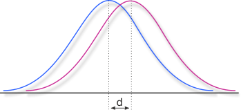

Site menu:
New: Continuous Norming with R (cNORM)
R package for generating continuous test norms in psychometrics and biometrics and for analyzing the model fit

Computation of Effect Sizes
Statistical significance specifies, if a result may not be the cause of random variations within the data. But not every significant result refers to an effect with a high impact, resp. it may even describe a phenomenon that is not really perceivable in everyday life. Statistical significance mainly depends on the sample size, the quality of the data and the power of the statistical procedures. If large data sets are at hand, as it is often the case f. e. in epidemiological studies or in large scale assessments, very small effects may reach statistical significance. In order to describe, if effects have a relevant magnitude, effect sizes are used to describe the strength of a phenomenon. The most popular effect size measure surely is Cohen's d (Cohen, 1988), but there are many more.
Here you will find a number of online calculators for the computation of different effect sizes and an interpretation table at the bottom of this page. Please click on the grey bars to show the calculators:
If the two groups have the same n, then the effect size is simply calculated by subtracting the means and dividing the result by the pooled standard deviation. The resulting effect size is called dCohen and it represents the difference between the groups in terms of their common standard deviation. It is used f. e. for calculating the effect for pre-post comparisons in single groups.
In case of relevant differences in the standard deviations, Glass suggests not to use the pooled standard deviation but the standard deviation of the control group. He argues that the standard deviation of the control group should not be influenced, at least in case of non-treatment control groups. This effect size measure is called Glass' Δ ("Glass' Delta"). Please type the data of the control group in column 2 for the correct calculation of Glass' Δ.
Finally, the Common Language Effect Size (CLES; McGraw & Wong, 1992) is a non-parametric effect size, specifying the probability that one case randomly drawn from the one sample has a higher value than a randomly drawn case from the other sample. In the calculator, we take the higher group mean as the point of reference, but you can use (1 - CLES) to reverse the view.
| Group 1 | Group 2 | |
| Mean | ||
| Standard Deviation | ||
| Effect Size dCohen | ||
| Effect Size Glass' Δ | ||
| Common Language Effect Size CLES | ||
| N (Total number of observations in both groups) |
|
| Confidence Coefficient | |
| Confidence Interval for dCohen |
Analogously, the effect size can be computed for groups with different sample size, by adjusting the calculation of the pooled standard deviation with weights for the sample sizes. This approach is overall identical with dCohen with a correction of a positive bias in the pooled standard deviation. In the literature, usually this computation is called Cohen's d as well. Please have a look at the remarks bellow the table.
The Common Language Effect Size (CLES; McGraw & Wong, 1992) is a non-parametric effect size, specifying the probability that one case randomly drawn from the one sample has a higher value than a randomly drawn case from the other sample. In the calculator, we take the higher group mean as the point of reference, but you can use (1 - CLES) to reverse the view.
Additionally, you can compute the confidence interval for the effect size and chose a desired confidence coefficient (calculation according to Hedges & Olkin, 1985, p. 86).
| Group 1 | Group 2 | |
| Mean | ||
| Standard Deviation | ||
| Sample Size (N) | ||
| Effect Size dCohen resp. gHedges * | ||
| Common Language Effect Size CLES** | ||
| Confidence Coefficient | |
| Confidence Interval |
*Unfortunately, the terminology is imprecise on this effect size measure: Originally, Hedges and Olkin referred to Cohen and called their corrected effect size d as well. On the other hand, corrected effect sizes were called g since the beginning of the 80s. The letter is stemming from the author Glass (see Ellis, 2010, S. 27), who first suggested corrected measures. Following this logic, gHedges should be called h and not g. Usually it is simply called dCohen or gHedges to indicate, it is a corrected measure.
**The Common Language Effect Size (CLES) is calculated by using the cumulative probability of divided by 1.41 via
Intervention studies usually compare the development of at least two groups (in general an experimental group and a control group). In many cases, the pretest means and standard deviations of both groups do not match and there are a number of possibilities to deal with that problem. Klauer (2001) proposes to compute g for both groups and to subtract them afterwards. This way, different sample sizes and pre-test values are automatically corrected. The calculation is therefore equal to computing the effect sizes of both groups via form 2 and afterwards to subtract both. Morris (2008) presents different effect sizes for repeated measures designs and does a simulation study. He argues to use the pooled pretest standard deviation for weighting the differences of the pre-post-means (so called dppc2 according to Carlson & Smith, 1999). That way, the intervention does not influence the standard deviation. Additionally, there are weighting to correct for the estimation of the population effect size. Usually, Klauer (2001) and Morris (2002) yield similar results.
The downside to this approach: The pre-post-tests are not treated as repeated measures but as independent data. For dependent tests, you can use calculator 4 or 5 or 13. transform eta square from repeated measures in order to account for dependences between measurement points.
| Intervention Group | Control Group | |||
| Pre | Post | Pre | Post | |
| Mean | ||||
| Standard Deviation | ||||
| Sample Size (N) | ||||
| Effect Size dppc2 sensu Morris (2008) | ||||
| Effect Size dKorr sensu Klauer (2001) | ||||
*Remarks: Klauer (2001) published his suggested effect size in German language and the reference should therefore be hard to retrieve for international readers. Klauer worked in the field of cognitive trainings and was interested in the comparison of the effectivity of different training approaches. His measure is simple and straightforward: dcorr is simply the difference between Hedge's g of two different treatment groups in pre-post research designs. When reporting meta analytic results in international journals, it might be easier to cite Morris (2008).
While steps 1 to 3 target at comparing independent groups, especially in intervention research, the results are usually based on intra-individual changes in test scores. Morris & DeShon (2008, p.109) suggest a procedure to estimate the effect size for single-group pretest-posttest designs by taking the correlation between the pre- and post-test into account:
In case, the correlation is .5, the resulting effect size equals 1. Comparison of groups with equal size (Cohen's d and Glass Δ). Higher values lead to an increase in the effect size. Morris & DeShon (2008) suggest to use the standard deviation of the pre-test, as this value is not influenced by the intervention. The following calculator both reports the according effect size and as well reports the effect size based on the pooled standard deviation and the effect size without correcting for the correlation dIndividual Groups (equaling dCohen):
| Group 1 | Group 2 | |
| Mean | ||
| Standard Deviation | ||
| Correlation | ||
| Effect Size dRepeated Measures | ||
| Effect Size dRepeated Measures, pooled | ||
| Effect Size dIndividual Groups | ||
N|
| |
| Confidence Coefficient | |
| Confidence Interval for dRM |
Thanks to Sven van As for pointing us to this effect size.
Effect sizes can be obtained by using the tests statistics from hypothesis tests, like Student t tests, as well. In case of independent samples, the result is essentially the same as in effect size calculation #2.
Dependent testing usually yields a higher power, because the interconnection between data points of different measurements are kept. This may be relevant f. e. when testing the same persons repeatedly, or when analyzing test results from matched persons or twins. Accordingly, more information may be used when computing effect sizes. Please note, that this approach largely has the same results compared to using a t-test statistic on gain scores and using the independent sample approach (Morris & DeShon, 2002, p. 119). Additionally, there is not THE one d, but that there are different d-like measures with different meanings. Consequently a d from an dependent sample is not directly comparable to a d from an independent sample, but yields different meanings (see notes below table).
Please choose the mode of testing (dependent vs. independent) and specify the t statistic. In case of a dependent t test, please type in the number of cases and the correlation between the two variables. In case of independent samples, please specify the number of cases in each group. The calculation is based on the formulas reported by Borenstein (2009, pp. 228).
| Mode of testing | |
| Student t Value | |
| n1 | |
| n2 | |
| r | |
| Effect Size d | |
* We used the formula tc described in Dunlop, Cortina, Vaslow & Burke (1996, S. 171) in order to calculate d from dependent t-tests. Simulations proved it to have the least distortion in estimating d:
We would like to thank Frank Aufhammer for pointing us to this publication.
** We would like to thank Scott Stanley for pointing out the following aspect: "When selecting 'dependent' in the drop down, this calculator does not actually calculate an effect size based on accounting for the dependency between the two variables being compared. It removes that dependency already calculated into a t-statistic so formed. That is, what this calculator does is take a t value you already have, along with the correlation, from a dependent t-test and removes the effect of the dependency. That is why it returns a value more like calculator 2. This calculator will produce an effect size when dependent is selected as if you treated the data as independent even though you have a t-statistic for modeling the dependency. Some experts in meta-analysis explicitly recommend using effect sizes that are not based on taking into account the correlation. This is useful for getting to that value when that is your intention but what you are starting with is a t-test and correlation based on a dependent analysis. If you would rather have the effect size taking into account the dependency (the correlation between measures), and you have the data, you should use calculator 4." (direct correspondence on 18th of August, 2019). Further discussions on this aspect is given in Jake Westfall's blog. To sum up: The decision on which effect size to use depends on your research question and this decision cannot be resolved definitively by the data themselves.
A very easy to interpret effect size from analyses of variance (ANOVAs) is η2 that reflects the explained proportion variance of the total variance. This proportion may be 13. transformed directly into d. If η2 is not available, the F value of the ANOVA can be used as well, as long as the sample size is known. The following computation only works for ANOVAs with two distinct groups (df1 = 1; Thalheimer & Cook, 2002):
| F-Value | |
| Sample Size of the Treatment Group | |
| Sample Size of the Controll Group | |
| Effect Size d |
In case, the groups means are known from ANOVAs with multiple groups, it is possible to compute the effect sizes f and d (Cohen, 1988, S. 273 ff.). Prior to computing the effect size, you have to determine the minimum and maximum mean and to calculate the between groups standard deviation σm manually:
- compute the differences between the means of each single group and the mean of the whole sample
- square the differences and sum them up
- divide the sum by the number of means
- draw the square root
Additionally, you have to decide, which scenario fits the data best:
- Please choose 'minimum deviation', if the group means are distributed close to the total mean.
- Please choose 'intermediate deviation', if the means are evenly distributed.
- Please choose 'maximum deviation', if the means are distributed mainly towards the extremes and not in the center of the range of means.
| Highest Mean (mmax) | |
| Lowest Mean (mmin) | |
| Between Group Std (σm) | |
| Std (σ for the complete sample) | |
| Number of Groups | |
| Distribution of Means | |
| Effect Size f | |
| Effect Size d |
Measures of effect size like d or correlations can be hard to communicate, e. g. to patients. If you use r2 f. e., effects seem to be really small and when a person does not know or understand the interpretation guidelines, even effective interventions could be seen as futile. And even small effects can be very important, as Hattie (2009) underlines:
- The effect of a daily dose of aspirin on cardio-vascular conditions only amounts to d = 0.07. However, if you look at the consequences, 34 of 1000 die less because of cardiac infarction.
- Chemotherapy only has an effect of d = 0.12 on breast cancer. According to the interpretation guideline of Cohen, the therapy is completely ineffective, but it safes the life of many women.
Rosenthal and Rubin (1982) suggest another way of looking on the effects of treatments by considering the increase of success through interventions. The approach is suitable for 2x2 contingency tables with the different treatment groups in the rows and the number of cases in the columns. The BESD is computed by subtracting the probability of success from the intervention an the control group. The resulting percentage can be transformed into dCohen.
Another measure, that is widely used in evidence based medicine, is the so called Number Needed to Treat. It shows, how many people are needed in the treatment group in order to obtain at least one additional favorable outcome. In case of a negative value, it is called Number Needed to Harm.
Please fill in the number of cases with a fortunate and unfortunate outcome in the different cells:
| Success | Failure | Probability of Success | |
| Intervention group | |||
| Control Group | |||
| Binomial Effect Size Display (BESD) (Increase of Intervention Success) |
|||
| Number Needed to Treat | |||
| rPhi | |||
| Effect Size dcohen | |||
A conversion between NNT and other effect size measures liken Cohen's d is not easily possible. Concerning the example above, the transformation is done via the point-biserial correlation rphi which is nothing but an estimation. It leads to a constant NNT independent from the sample size and this is in line with publications like Kraemer and Kupfer (2006). Alternative approaches (comp. Furukawa & Leucht, 2011) allow to convert between d and NNT with a higher precision and usually they lead to higher numbers. The Kraemer et al. (2006) approach therefore seems to probably overestimate the effect and it seems to yield accurate results essentially, when normal distribution of the raw values is given. Please have a look at the Furukawa and Leucht (2011) paper for further information:
| Cohen's d | Number Needed to Treat (NNT) |
Studies, investigating if specific incidences occur (e. g. death, healing, academic success ...) on a binary basis (yes versus no), and if two groups differ in respect to these incidences, usually Odds Ratios, Risk Ratios and Risk Differences are used to quantify the differences between the groups (Borenstein et al. 2009, chap. 5). These forms of effect size are therefore commonly used in clinical research and in epidemiological studies:
- The Risk Ratio is the quotient between the risks, resp. probabilities for incidences in two different groups. The risk is computed by dividing the number of incidences by the total number in each group and building the ratio between the groups.
- The Odds Ratio is comparable to the relative risk, but the number of incidences is not divided by the total number, but by the counter number of cases. If f. e. 10 persons die in a group and 90 survive, than the odds in the groups would be 10/90, whereas the risk would be 10/(90+10). The odds ratio is the quotient between the odds of the two groups. Many people find Odds Ratios less intuitive compared to risk ratios and if the incidence is uncommon, both measures are roughly comparable. The Odds Ratio has favorable statistical properties which makes it attractive for computations and is thus frequently used in meta analytic research. Yule's Q - a measure of association - transforms Odds Ratios to a scale ranging from -1 to +1.
- The Risk Difference is simply the difference between two risks. Compared to the ratios, the risks are not divided but subtracted from each other. For the computation of Risk Differences, only the raw data is used, even when calculating variance and standard error. The measure has a disadvantage: It is highly influenced by changes in base rates.
| Incidence | no Incidence | N | |
| Treatment | |||
| Control | |||
|
| |||
| Risk Ratio | Odds Ratio | Risk Difference | |
| Result | |||
| Log | |||
| Estimated Variance V | |||
| Estimated Standard Error SE | |||
| Yule's Q | |||
Cohen (1988, S. 109) suggests an effect size measure with the denomination q that permits to interpret the difference between two correlations. The two correlations are transformed with Fisher's Z and subtracted afterwards. Cohen proposes the following categories for the interpretation: <.1: no effect; .1 to .3: small effect; .3 to .5: intermediate effect; >.5: large effect.
| Correlation r1 | |
| Correlation r2 | |
| Cohen's q | |
| Interpretation |
Especially in meta analytic research, it is often necessary to average correlations or to perform significance tests on the difference between correlations. Please have a look at our page Testing the Significance of Correlations for on-line calculators on these subjects.
Most statistical procedures like the computation of Cohen's d or eta;2 at least interval scale and distribution assumptions are necessary. In case of categorical or ordinal data, often non-parametric approaches are used - in the case of statistical tests for example Wilcoxon or Mann-Whitney-U. The distributions of the their test statistics are approximated by normal distributions and finally, the result is used to assess significance. Accordingly, the test statistics can be transformed in effect sizes (comp. Fritz, Morris & Richler, 2012, p. 12; Cohen, 2008). Here you can find an effect size calculator for the test statistics of the Wilcoxon signed-rank test, Mann-Whitney-U or Kruskal-Wallis-H in order to calculate η2. You alternatively can directly use the resulting z value as well:
| Test | |
Test statistics * |
|
n2 |
|
n2 |
|
| Eta squared (η2) | |
| dCohen** |
* Note: Please do not use the sum of the ranks but instead directly type in the test statistics U, W or z from the inferential tests. As Wilcoxon relies on dependent data, you only need to fill in the total sample size. For Kruskal-Wallis please as well specify the total sample size and the number of groups. For z, please fill in the total number of observations (either the total sample size in case of independent tests or for dependent measures with single groups the number of individuals multiplied with the number of assessments; many thanks to Helen Askell-Williams for pointing us this aspect).
** Transformation of η2 is done with the formulas of 14. Transformation of the effect sizes d, r, f, Odds Ratio and η2.
Studies based on regression analysis are hard to include in meta analytic research, if they only report standardized β coefficients. It is debated, if an imputation is possible and advisable in this case. On the other hand, power of the analyses is reduced if to many studies cannot be included, which itself distorts the representativeness of the results. Peterson and Brown (2005) suggest a procedure for converting standardized β weights to r, if the β weights range between -0.5 and 0.5. r can then be used directly as an effect size or converted into d or other metrices. Peterson and Brown (2005, p. 180) conclude: "However, despite the potential usefulness of the proposed imputation approach, meta-analysts are still encouraged to make every effort to obtain original correlation coefficients."
| Standardized β weight | r | |
In order to compute Cohen's d and for other purposes, it is necessary to determine the mean (pooled) standard deviation. Here, you will find a small tool that does this for you. Different sample sizes are corrected as well and you can include up to 10 groups. Please specify the number before doing the calculation. If a value for the sample size is missing, the calculator only uses sd and does not correct for sample size.
| Number of Groups | Standard Deviation (sd) | Sample Size (n) |
| Group 1 | ||
| Group 2 | ||
| Pooled Standard Deviation spool | ||
Please choose the effect size, you want to transform, in the drop-down menu. Specify the magnitude of the effect size in the text field on the right side of the drop-down menu afterwards. The transformation is done according to Cohen (1988), Rosenthal (1994, S. 239), Borenstein, Hedges, Higgins, and Rothstein (2009; transformation of d in Odds Ratios) and Dunlap (1994; transformation in CLES).
| Effect Size | ||
| d | ||
| r | ||
| η2 | ||
| f | ||
| Odds Ratio | ||
| Common Language Effect Size CLES | ||
| Number Needed to Treat (NNT) | ||
The χ2 and z test statistics from hypothesis tests can be used to compute d and r(Rosenthal & DiMatteo, 2001, p. 71; comp. Elis, 2010, S. 28). The calculation is however only correct for χ2 tests with one degree of freedom. Please choose the tests static measure from the drop-down menu and specify the value and N. The transformation from d to r and η2 is based on the formulas used in the prior section (13).
| Test Statistic | ||
| N | ||
| d | ||
| r | ||
| η2 | ||
Here, you can see the suggestions of Cohen (1988) and Hattie (2009 S. 97) for interpreting the magnitude of effect sizes. Hattie refers to real educational contexts and therefore uses a more benignant classification, compared to Cohen. We slightly adjusted the intervals, in case, the interpretation did not exactly match the categories of the original authors.
| d | r* | η2 | Interpretation sensu Cohen (1988) | Interpretation sensu Hattie (2009) |
| < 0 | < 0 | - | Adverse Effect | |
| 0.0 | .00 | .000 | No Effect | Developmental effects |
| 0.1 | .05 | .003 | ||
| 0.2 | .10 | .010 | Small Effect | Teacher effects |
| 0.3 | .15 | .022 | ||
| 0.4 | .2 | .039 | Zone of desired effects | |
| 0.5 | .24 | .060 | Intermediate Effect | |
| 0.6 | .29 | .083 | ||
| 0.7 | .33 | .110 | ||
| 0.8 | .37 | .140 | Large Effect | |
| 0.9 | .41 | .168 | ||
| ≥ 1.0 | .45 | .200 | ||
* Cohen (1988) reports the following intervals for r: .1 to .3: small effect; .3 to .5: intermediate effect; .5 and higher: strong effect
Borenstein (2009). Effect sizes for continuous data. In H. Cooper, L. V. Hedges, & J. C. Valentine (Eds.), The handbook of research synthesis and meta analysis (pp. 221-237). New York: Russell Sage Foundation.
Borenstein, M., Hedges, L. V., Higgins, J. P. T., & Rothstein, H. R. (2009). Introduction to Meta-Analysis, Chapter 7: Converting Among Effect Sizes . Chichester, West Sussex, UK: Wiley.
Cohen, J. (1988). Statistical power analysis for the behavioral sciences (2. Auflage). Hillsdale, NJ: Erlbaum.
Cohen, B. (2008). Explaining psychological statistics (3rd ed.). New York: John Wiley & Sons.
Dunlap, W. P. (1994). Generalizing the common language effect size indicator to bivariate normal correlations. Psychological Bulletin, 116(3), 509-511. doi: 10.1037/0033-2909.116.3.509
Dunlap, W. P., Cortina, J. M., Vaslow, J. B., & Burke, M. J. (1996). Meta-analysis of experiments with matched groups or repeated measures designs. Psychological Methods, 1, 170-177.
Elis, P. (2010). The Essential Guide to Effect Sizes: Statistical Power, Meta-Analysis, and the Interpretation of Research Results. Cambridge: Cambridge University Press.
Fritz, C. O., Morris, P. E., & Richler, J. J. (2012). Effect size estimates: Current use, calculations, and interpretation. Journal of Experimental Psychology: General, 141(1), 2-18. https://doi.org/10.1037/a0024338
Furukawa, T. A., & Leucht, S. (2011). How to obtain NNT from Cohen's d: comparison of two methods. PloS one, 6, e19070.
Hattie, J. (2009). Visible Learning. London: Routledge.
Hedges, L. & Olkin, I. (1985). Statistical Methods for Meta-Analysis. New York: Academic Press.
Klauer, K. J. (2001). Handbuch kognitives Training. Göttingen: Hogrefe.
McGraw, K. O., & Wong, S. P. (1992). A common language effect size statistic. Psychological bulletin, 111(2), 361-365.
Morris, S. B., & DeShon, R. P. (2002). Combining effect size estimates in meta-analysis with repeated measures and independent-groups designs. Psychological Methods, 7(1), 105-125. https://doi.org/10.1037//1082-989X.7.1.105
Morris, S. B. (2008). Estimating Effect Sizes From Pretest-Posttest-Control Group Designs. Organizational Research Methods, 11(2), 364-386. http://doi.org/10.1177/1094428106291059
Peterson, R. A., & Brown, S. P. (2005). On the use of beta coefficients in meta-analysis. The Journal of Applied Psychology, 90 (1), 175-181. https://doi.org/10.1037/0021-9010.90.1.175
Rosenthal, R. (1994). Parametric measures of effect size. In H. Cooper & L. V. Hedges (Eds.), The Handbook of Research Synthesis (231-244). New York, NY: Sage.
Rosenthal, R. & DiMatteo, M. R. (2001). Meta-Analysis: Recent Developments in Quantitative Methods for Literature Reviews. Annual Review of Psychology, 52(1), 59-82. doi:10.1146/annurev.psych.52.1.59
Thalheimer, W., & Cook, S. (2002, August). How to calculate effect sizes from published research articles: A simplified methodology. Retrieved March 9, 2014 from http://work-learning.com/effect_sizes.htm.
In case you need a reference to this page in a scientific paper, please use the following citation:
Lenhard, W. & Lenhard, A. (2016). Calculation of Effect Sizes. Retrieved from: https://www.psychometrica.de/effect_size.html. Dettelbach (Germany): Psychometrica. DOI: 10.13140/RG.2.2.17823.92329